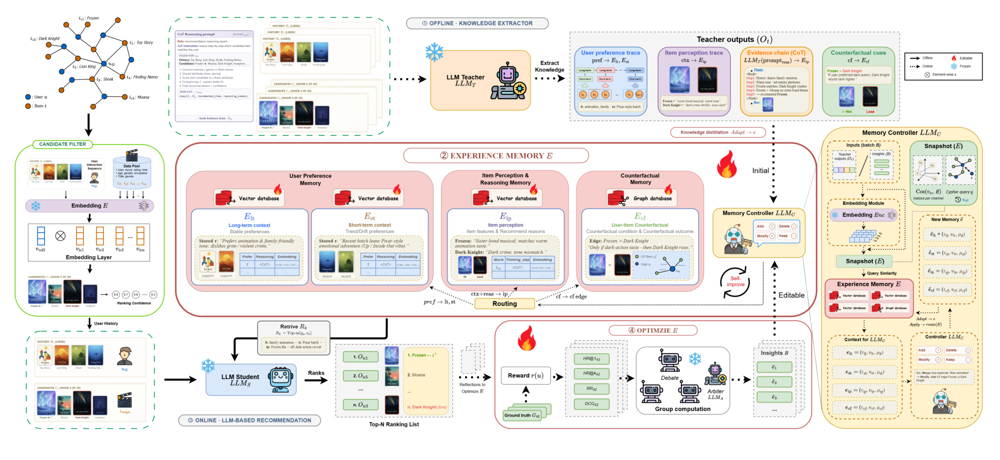
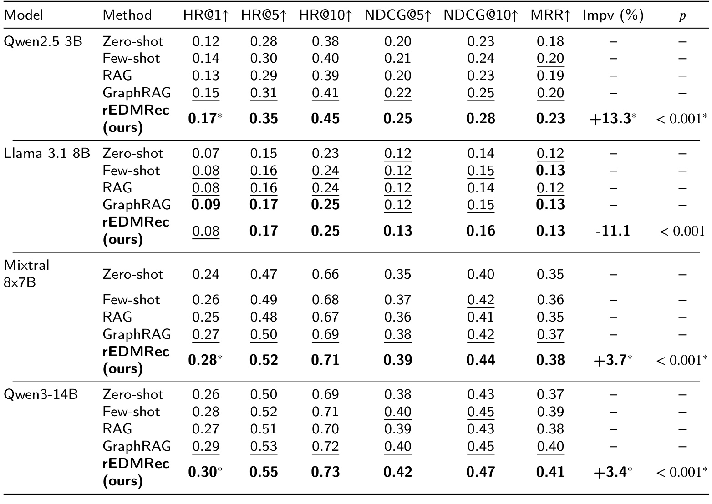
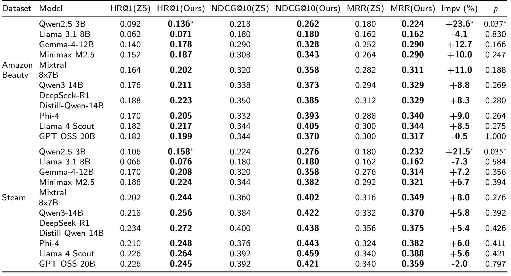
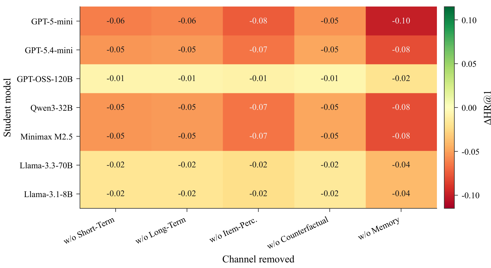
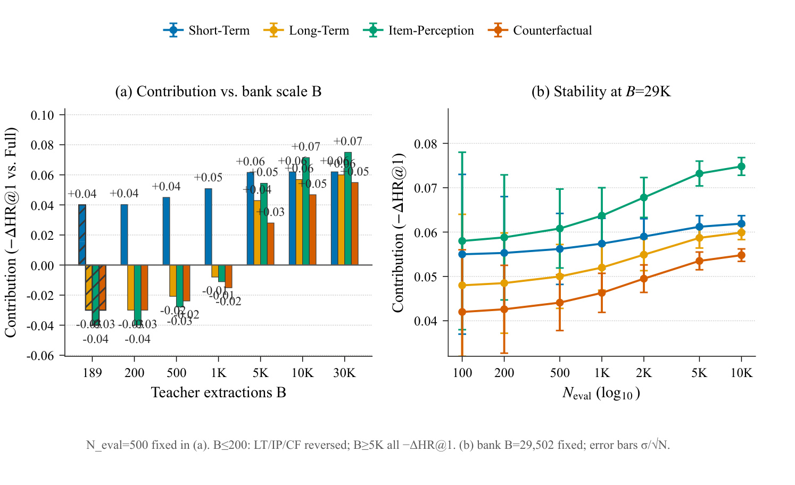
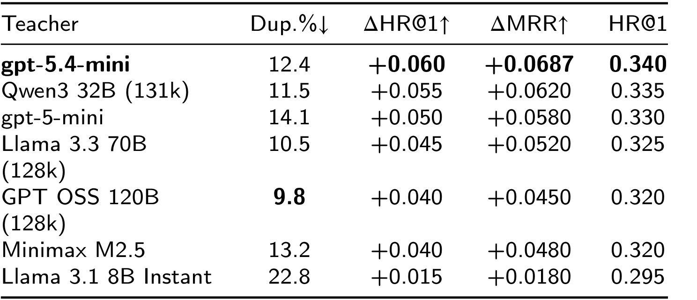
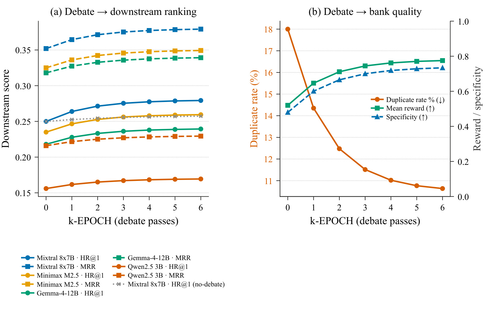
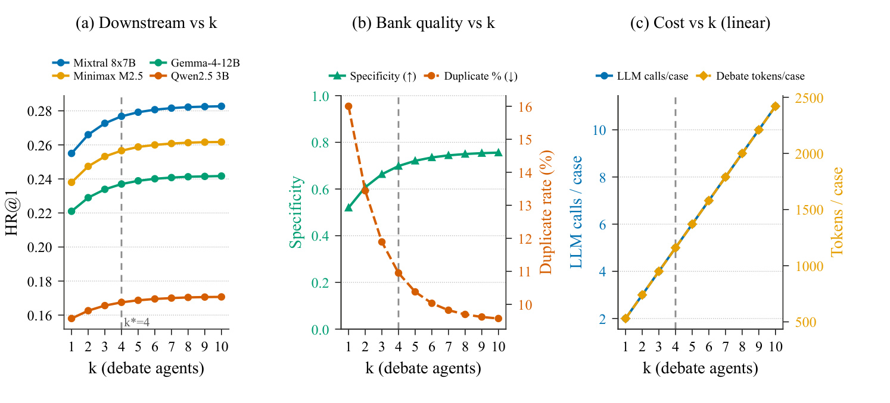

rEDMRec：把大模型推荐推理蒸馏为可编辑经验记忆
论文：rEDMRec: Distilling Large Language Model Reasoning into an Editable Experience Memory for Recommendation
作者：Hoang Hai Nguyen 等；第一作者主机构为 Vietnam National University, Ho Chi Minh City / University of Science, Ho Chi Minh City。
代码状态：本轮未核验到独立代码或项目页。
1. 背景和问题
LLM 为推荐生成的偏好提取与候选对比推理，往往每次请求都要重做，用完即丢；若只压进模型权重，又无法在偏好漂移时逐条检查和修正。
这篇论文讨论的不是“让大模型直接当一个更强的推荐器”，而是怎样把昂贵大模型已经做过的推理变成一种可复用、可追踪、可局部修改的系统资产。传统序列推荐把用户—物品交互压进隐向量，擅长规模化打分，却很难显式说明某次选择源于长期类型偏好、当前会话意图、物品属性理解，还是两个易混候选之间的反事实差异。把 LLM 放进在线排序可以补足语义推理，但每次请求都重新读历史、比较候选，成本随流量反复支付，生成内容也难以稳定复用。论文因此把核心目标改写为：teacher 只在离线或周期性维护阶段解释交互，student 在线只检索已经沉淀的经验并排序。
作者把现有替代方案的缺口分成三类。少样本提示只能携带有限示例，遇到长历史和偏好漂移时上下文不足；RAG 能找回原始评论或交互，却把“证据检索”和“如何利用证据推理”都留给在线模型，噪声与重复信息仍会占据上下文；GraphRAG 增加实体关系后可以找到结构邻域，但关系边通常是静态抽取，不能针对下游排名失败逐条修订。另一条路线是参数蒸馏或微调，它把 teacher 能力吸收到 student 权重中，却失去条目级可见性：错误经验无法单独删除，新偏好也不能只改一小块记忆。因此 rEDMRec 不把经验等同于模型参数，也不把它简化为原始文档缓存，而是设计一个有类型、有元数据、有编辑操作的外部 memory bank。
形式上，对用户 $u$ 与候选集 $C_u$，普通语言模型推荐器从当前上下文为每个候选分配概率，再选最大者：
符号解释：$u$ 是用户，$C_u$ 是包含一个真实目标和若干负样本的候选集合，$c$ 是候选物品，$P_\theta$ 是参数为 $\theta$ 的语言模型条件概率，$\hat{i}$ 是最终排在首位的物品。rEDMRec 要改变的是 $\mathrm{context}(u)$ 的来源与维护方式：上下文不再只是每次临时拼出的交互文本，而是由可检索的四类经验共同组成。
这个问题有两个同时成立、又容易相互冲突的要求。其一是“稳定复用”：相似请求应复用同一条长期偏好或物品认知，减少重复推理；其二是“及时纠错”：当 student 的排名暴露出旧经验错误、重复或过泛时，系统必须在不重训 student 的情况下局部 Add、Delete、Modify 或 Keep。作者因而把在线预测与离线编辑拆开：冻结 student 的参数，让结果变化尽量归因于检索到的经验；再用多智能体辩论和 arbiter 把排名 reward 转成 memory edit。贡献不只是多一个 RAG 索引，而是提出“可编辑经验是推荐系统中介状态”这一工程接口，使 teacher 推理、student 能力与持续维护可以解耦。
这一设定还隐含了比准确率更严格的可维护性问题：经验必须知道自己属于哪个时间尺度、适用于哪个用户或物品、由什么证据产生，并能在冲突时找到应被替换的旧版本。如果只有一堆没有作用域的文本片段，所谓记忆仍是普通 RAG；如果每次纠错都要重新训练参数，所谓编辑又退化成微调。论文因此把“类型、检索、操作、反馈”视为同一个闭环的四个必要条件。
2. 方法
2.1 总体流程：把在线推理改写为离线沉淀与在线检索
rEDMRec 有三条相互衔接的链路。第一条是记忆构建：候选过滤器把交互历史、物品元数据和候选映射到共享语义空间，teacher 用四个专门 prompt 分别抽取长期偏好、短期上下文、物品感知和反事实知识，adapter 将自然语言输出规范化，controller 决定如何写入 memory bank。第二条是在线推理：对当前用户和候选集，从每个通道独立检索 top-$m$ 经验，论文默认 $m=5$，拼入冻结 student 的原始排名 prompt；在线路径不调用 teacher，也不更新 student 权重。第三条是优化：根据真实目标的排名计算多维 reward，多个有不同 persona 的 agent 围绕失败原因辩论，arbiter 只提交少量合成编辑，再由同一个 controller 写回 bank。
符号解释：$P_S$ 是 student 的候选概率，$x_u$ 是原始用户—候选输入，$\mathcal K$ 是四通道集合，$R_k$ 是第 $k$ 个通道检索到的经验，$E$ 是整个 memory bank，$o$ 是 controller 产生的编辑操作。前半式描述只读在线检索，后半式描述异步写入，两者把服务延迟与高成本维护分开。

图 2 展示的关键不是组件数量，而是写路径和读路径的边界：左侧 teacher inference、adapter、controller 只服务于经验构建和后续维护，中间四类 memory bank 是唯一跨阶段状态，右侧 student 只读取检索结果并输出 ranking。底部 reward–debate–arbiter 环把排序失败重新变成结构化编辑建议，而不是把梯度回传给 student。这样的边界给了系统可审计性：一次预测可追溯到哪些通道与哪些条目，一次性能变化也可以对应到哪些 Add/Delete/Modify/Keep；代价则是 bank 质量与检索召回成为新的单点风险。图中还明确把 controller 放在两条写路径的共同入口，意味着初始抽取和辩论修订遵循同一套冲突检查规则。
2.2 候选过滤与 teacher 的四次专门抽取
候选过滤器不是最终排序器，而是为 teacher 提供稳定语义底座。它把用户历史、物品标题/类别/描述及候选文本送入同一个 encoder，以余弦相似度压缩待读证据，避免 teacher 在每个 pass 中处理全部原始日志。teacher 随后执行 $p\in\{pref,ctx,reas,cf\}$ 四个专门 pass：长期偏好抽取跨会话稳定口味，短期上下文捕捉最近序列与临时约束，item-perception 把物品特征翻译成需求关系，counterfactual 比较正例与高混淆负例，提炼“为何选 A 而非 B”的边界。共享编码与四次抽取共同写为：
符号解释：$\mathrm{Enc}$ 把文本编码为向量 $\mathbf v$，$\mathrm{sim}$ 是余弦相似度；$\mathrm{LLM}_T$ 是 teacher，$H_u$ 是用户历史，$M$ 是物品元数据，$i$ 是目标或候选，$r_p$ 是第 $p$ 个 prompt 的推理。相同 encoder 还会用于后续检索，因此其语义偏差会贯穿整条链路；拆成四次调用虽然增加离线成本，却让字段来源、通道路由和消融都有明确语义，避免一个混合回答同时污染多个通道。
2.3 四类可编辑经验通道与 memory controller
经验库按类型而非仅按用户或文档切分。long-term preference（lt）回答“总体喜欢什么”，short-term context（st）回答“此刻在做什么”，item-perception（ip）保存物品属性与需求的可迁移联系，counterfactual（cf）保存易混候选之间的决策边界；前三类进入向量库，cf 同时保留候选对图边和语义向量。teacher 输出先经 adapter 路由、规范化为文本 $\tau_k$、embedding 和元数据，controller 再读取局部 snapshot 与批次 $B$，为建议选择 Add、Delete、Modify 或 Keep。核心机制是 student 参数始终冻结，只有带来源和类型的经验经 controller 审核后改变；任何 debater 都不能直接写库。 类型、适配与操作可联合表示为：
符号解释：$\mathcal K=\{lt,st,ip,cf\}$，$E_k$ 是类型集合，$e$ 是带文本、embedding、用户/物品、时间和来源的条目；$\mathrm{route}_k$ 选择相关 teacher 字段，$\tau_k$ 是规范文本，$\mu_k$ 是元数据；$\mathrm{LLM}_C$ 是控制器，$o_i$ 是单条操作。类型分区使系统能分别控制容量、生命周期和检索预算；adapter 把自然语言生成与存储 schema 隔开；局部 snapshot 避免 controller 每次读全库。风险在于 snapshot 若漏掉相似旧条目，Add 会制造 duplication，而误判 Delete/Modify 又可能把仍有效的偏好永久覆盖，因此版本和溯源不是可选附加项。
2.4 冻结 student、分通道检索与 K-agent debate
在线阶段保留原 student 的候选 ranking 流程，只在 prompt 中插入分通道 top-$m$ 经验，默认每通道 $m=5$。查询向量来自当前用户上下文与候选描述，各通道单独取 top-$m$，避免一个大索引凭条目数量挤压其他类型；cf 还利用图边限制候选对。四组证据拼回原始 prompt 后，冻结 student 输出完整候选次序，检索和排序联合写为：
符号解释：$\mathbf q_u$ 是查询向量，$\mathbf v_e$ 是经验向量，$E_k^u$ 是当前用户/候选可见的第 $k$ 类条目，$R_k$ 是该通道检索结果，$P_S$ 是冻结 student 的候选概率。由于实验不通过 rEDMRec 更新 $P_S$，相对 zero-shot、few-shot、RAG 或 GraphRAG 的变化主要来自经验内容、作用域和检索组织，而不是新增参数训练；这也让通道消融更容易解释。
维护闭环先把真实物品的 rank 转成 HR@1、HR@$k$、reciprocal-rank 与 DCG 风格的四维 reward，使 agent 能区分“未进前部”“已进前 $k$ 但次序不佳”和“只差一位”。随后 $K$ 个 persona agent 读取同一用户、排序、reward 与共享 transcript；每个 agent 只追加诊断，不能提交编辑，后续 agent 可以质疑重复、过泛或冲突观点。arbiter 最后读取整段 transcript，合成不超过 $n_{max}$ 条候选经验，再交 controller 去重落库。完整诊断—讨论—合成过程为：
符号解释：$r(u)$ 的四项是单个案例诊断信号而非表格均值；$g_j$ 是第 $j$ 个 agent 的意见，$\mathcal T$ 是共享 transcript，$\hat L_u$ 是完整排序，$\Vert$ 表示追加；$\mathrm{LLM}_A$ 是 arbiter，$\tilde e_i$ 只是候选经验而非已写入条目。多个 agent 的作用不是多数投票，而是提供互补审查视角；把“讨论”“合成”“执行”分层能阻止单一 persona 越权改库，但辩论偏差、arbiter 压缩损失和 controller 去重错误也会逐 epoch 累积，因而必须由无辩论 control 与未来时间窗共同验证。
3. 实验结果
3.1 设置：三种数据稠密度、十个 student 与四类基线
实验使用 MovieLens-1M、Amazon Beauty 和 Steam。附录 Table 20 给出的统计分别是：ML-1M 含 6,040 个用户、3,706 个物品、1,000,209 次交互，密度 4.47%，采用 20-core 并只保留评分大于 3.5 的正反馈；Beauty 含 1,620 个用户、7,116 个物品、14,984 次交互，密度 0.13%，采用 5-core 和同样的评分阈值；Steam 含 62,936 个用户、10,978 个物品、5,077,150 次交互，密度 0.73%，采用 5-core，所有已记录交互视作正反馈。三者按时间顺序 0.8/0.1/0.1 切分，测试时每例使用 20 个候选，即 1 个真实物品加 19 个负例，随机种子为 42；ML-1M 测试样本数为 49,893，Beauty 和 Steam 各为 1,460。
student 共十种：Qwen2.5 3B、Llama 3.1 8B、Gemma-4-12B、Minimax M2.5、Mixtral 8×7B、Qwen3-14B、DeepSeek-R1-Distill-Qwen-14B、Phi-4、Llama 4 Scout 和 GPT OSS 20B。比较对象是 zero-shot、few-shot、从原始历史/评论检索的 RAG、GraphRAG 与 rEDMRec，指标包含 HR@1、HR@5、HR@10、NDCG@5、NDCG@10 和 MRR。由于候选集固定为 20，HR@1 很直观地衡量首位命中，但不能等同于真实线上全库召回；显著性也应结合测试样本规模阅读，不能只看相对百分比。
3.2 主结果：弱 student 获益最大，但不是“所有模型都提升”
ML-1M 的 Table 4 选取四个代表 student。Qwen2.5 3B 从 GraphRAG 的 HR@1 0.15 提升到 0.17，相对增益 13.3%，且 $p<0.001$；rEDMRec 的 HR@5、HR@10、NDCG@5、NDCG@10、MRR 分别为 0.35、0.45、0.25、0.28、0.23。Mixtral 8×7B 从 0.27 到 0.28，相对增益 3.7%；Qwen3-14B 从 0.29 到 0.30，增益 3.4%。但 Llama 3.1 8B 从 GraphRAG 的 0.09 降至 0.08，相对变化为 -11.1%。这组结果支持的准确命题是“结构化经验能显著帮助部分 student，尤其较弱模型”，而不是普遍支配所有检索基线。

Table 4 的横向信息揭示两个重要细节。第一，Qwen2.5 3B 不只在 HR@1 上获益，其 HR@5 0.35 和 HR@10 0.45 也高于该模型其余设置，说明经验并非仅把原本第二名的正例机械推到第一名，而是整体改善了前部候选位置。第二，容量更大的模型边际增益收窄，甚至出现 Llama 3.1 8B 的负值，提示外部经验与模型自身指令跟随、上下文使用能力并不单调对应参数规模。表内 Impv 是相对于作者选定最佳对照的 HR@1 相对变化，不能与绝对百分点混用；0.15 到 0.17 是 +0.02 绝对值和 +13.3% 相对值。
Beauty 与 Steam 用全部十个 student 检查跨域迁移。Qwen2.5 3B 在 Beauty 上由最佳对照 0.092 提升至 0.136，作者报告相对增益 23.6%、$p=0.037$；在 Steam 上由 0.106 提升至 0.158，增益 21.5%、$p=0.035$。多数中等容量模型为正向，但不少 $p$ 值没有达到常用显著性阈值。反例仍存在：Beauty 上 Llama 3.1 8B 的 rEDMRec HR@1 为 0.071、Impv -4.1%，GPT OSS 20B 为 0.199、Impv -0.5%；Steam 上两者分别为 0.076、-7.3% 与 0.245、-2.0%。因此跨数据集证据强化了“容量依赖”，也提醒不能只汇报 Qwen 的最大提升。

Table 5 的价值在于同时覆盖极稀疏电商显式反馈与大规模游戏隐式反馈。Qwen2.5 3B 在两个域都显著受益，说明四通道经验并非只记住电影类别标签；但表中同一架构族的负例又排除了“换成 rEDMRec 就必然更好”的解释。Beauty 和 Steam 各只有 1,460 个测试例，单个 student 的小幅差异更容易受采样影响，所以应把效果量和 $p$ 值一起看。论文没有在完整线上候选空间复现这些收益，也没有提供端到端吞吐/延迟，当前结果证明的是固定 20 候选重排下的有效性，而非工业级检索全链路已经解决。表内 ZS 列还是 zero-shot 而非每个模型的 GraphRAG 最优值，阅读 Impv 时必须遵循作者表头口径，不能跨表自行重算后混用。
3.3 通道、bank 容量与 teacher 质量：增益取决于匹配关系
Table 6 将 student 分为 strong、mid、saturated 和 weak，并报告移除通道后的 $\Delta$HR@1。short-term context 最稳定：移除它对 strong 和 mid 各约 -0.04，对 saturated 约 -0.01，对 weak 约 -0.01 至 -0.02，负号意味着原通道有帮助。其他通道会反转：long-term 对 strong 约 +0.03、对 mid 约 0、对 saturated 接近 0、对 weak约 +0.01；item-perception 对 strong 约 +0.04、mid 为 0、saturated 近 0、weak 略正；counterfactual 对 strong 约 +0.03，却对 mid 约 -0.04。这里正的移除差值表示该通道在相应设置中可能带来干扰，不能把“通道语义合理”直接等同于“所有 student 都应保留”。

Figure 4 应和原始 Table 6、正文一起审计：渲染出的热力图格子几乎全是负值，例如 gpt-5-mini 一行可见 -0.06、-0.06、-0.08、-0.05、-0.10，这与 Table 6/正文所述 strong student 在 long-term、item-perception、counterfactual 上出现正向“移除增益”不一致。本文数值解释以可逐格读取的 Table 6 与正文为准，并把图 4 视为潜在的符号或绘图错误，而不是强行抹平矛盾。这一内部不一致削弱了精确通道结论的可信度，却不影响 short-term 在表格各组均为负这一主要方向；复现时必须回到代码定义确认 $\Delta$ 是 full-minus-ablation 还是 ablation-minus-full。
作者还改变 bank 容量，考察经验从极少条目扩展后的阶段性行为。小 bank 时，长期偏好、物品感知与反事实条目可能过于稀疏或偏置，给 strong student 注入错误先验；容量上升后，覆盖面、特异性和 hard-negative 边逐渐充足，通道作用才可能转正。可见曲线横轴从 189 延伸到约 30K，而图注/正文又讨论扩大到 $10^6$ 的趋势；截图中并未清晰呈现百万量级实测点，因此“扩容至百万仍成立”应当视为文字声明或外推，不宜当作图上直接读到的证据。

Figure 5 把“是否使用某个通道”改写成“在什么 bank 规模下使用”。这能解释主表的非单调结果：一个 student 的上下文利用能力再强，如果 bank 中相关条目少、重复高或粒度不合适，更多检索只会稀释有效信号；反过来，弱 student 即使拿到高质量复杂经验，也可能无法把反事实规则稳定转成候选次序。图中的方向支持容量依赖，但横轴可见范围与正文百万级描述存在证据间隙，而且没有给出每个规模点的方差或多随机种子置信区间。工程上更稳妥的做法是按通道监控覆盖率、重复率和离线增益，而不是设一个全局容量阈值。
teacher 质量实验固定 student 后更清楚地展示 bank duplication 与收益。Table 7 的 strong student 设置中，gpt-5.4-mini teacher 产生的重复率为 12.4%，HR@1 增益 +0.060、最终 HR@1 0.340；Qwen3 32B 为 11.5%、+0.055、0.335；gpt-5-mini 为 14.1%、+0.050；Llama 3.3 70B 为 10.5%、+0.045；GPT OSS 120B、Minimax M2.5 和 Llama 3.1 8B Instant 分别为 9.8%/+0.040、13.2%/+0.040、22.8%/+0.015。较高重复率通常对应较低增益，但不是严格单调，说明 duplication 是质量指标之一，不是 teacher 优劣的充分统计量。

Table 7 把 teacher 变量与 student 变量分开，是论文因果链中比“最大提升”更有解释力的一张表。最低质量 teacher 的 22.8% 重复率与 +0.015 增益形成明显下界，而多种更强 teacher 给出 +0.040 到 +0.060；但 9.8% 重复率并没有赢过 12.4%，表明条目是否具体、是否覆盖决定边界、是否能被当前 student 理解同样重要。附录 Table 8 固定为 Qwen2.5 student 时，同一 teacher 顺序的增益约为 +0.050、+0.045、+0.042、+0.038、+0.034、+0.033、+0.010，整体低于 strong student，直接证明 bank 质量的收益受 student 能力上限约束。
3.4 辩论是否真的优化了 bank，以及成本拐点在哪里
六个 debate epoch 的结果同时追踪 student 排名、bank duplication、reward 与 specificity。Table 17 中，epoch 0 时 Mixtral HR@1 0.250、Qwen 0.156、无辩论 control 0.250、重复率 18.0%、reward 0.520、specificity 0.480；到 epoch 2 分别为 0.271、0.165、0.254、12.5%、0.712、0.665；到 epoch 3 为 0.275、0.167、0.256、11.5%、0.745、0.700；epoch 6 达到 0.279、0.169、0.257、10.6%、0.775、0.734。全程变化为 +0.029、+0.013、+0.007、-7.4 个百分点、+0.255、+0.254。

Figure 6 的多曲线共同支持“编辑的是 bank，而不只是偶然换了 prompt”：随着 epoch 增加，重复率下降、经验 specificity 和 reward 上升，两个冻结 student 的 HR@1 同步提高；无 debate control 只从 0.250 到 0.257。Table 18 进一步给出 epoch 6 时完整 debate 相对 control 的约 +0.022 增益。仍需注意，这不是严格随机对照的线上持续学习实验：arbiter、controller 和评估用例可能共享同一任务分布，reward 又直接由目标排名构造，因此存在对离线测试模式逐轮适配的风险。论文尚未证明同样的编辑能在未来时间窗、冷启动用户或分布漂移后保持收益。
agent 数量从 1 增至 10 时，HR@1 依次为 0.255、0.266、0.273、0.277、0.279、0.281、0.282、0.282、0.282、0.283；specificity 从 0.520 升至 0.756，重复率从 16.0% 降至 9.6%，LLM 调用次数则从 2 增至 11。前四个 agent 已把 HR@1 提升到 0.277，即相对单 agent +0.022；从 4 增至 10 只再加 +0.006。论文据质量—成本比选 $K^*=4$，这比“更多 agent 总更好”更符合真实部署：每轮还要额外加一次 arbiter 调用，辩论长度也随 transcript 增长。

Figure 7 可见性能曲线很快变平，而成本近似随 agent 数线性增加；因此 $K=4$ 是经验拐点，不是理论最优常数。Table 9 的调用数 2 至 11 对应 $K$ 个 debater 加一次 arbiter，尚未计入 teacher 初次建库、embedding、检索与 controller 的总成本。定性审计还显示，优化后 long-term specificity 从 0.500 到 0.520，item-perception 从 0.405 到 0.488，counterfactual 从 0.478 到 0.519，但 short-term 从 0.433 降到 0.401；作者解释为短期条目被压缩。这个反例说明“更短更少重复”不必然等于“更具体”，通道应使用不同质量目标。
4. 总结
rEDMRec 最有价值的思想，是把 teacher 推理从一次性生成物变成位于原始日志与模型权重之间的可编辑状态：lt、st、ip、cf 四通道保存不同时间尺度和决策角色的经验；冻结 student 只做分通道检索与候选排序；reward、K-agent debate、arbiter 与 controller 再把错误排名转为有限的 Add/Delete/Modify/Keep。三数据集、十个 student 的结果说明它对 Qwen2.5 3B 等较弱 student 可带来较大收益，且 bank 重复率下降与两个 student 的排名同步改善；同时 Llama 3.1 8B、GPT OSS 20B 的负例和大量不显著结果明确表明收益不是普适的。这也是本文从普通检索增强走向可治理、可回滚推荐记忆的关键分界。
从系统设计看，这一方案真正可迁移的不是某个 prompt，而是三层契约。数据层要求每条经验带类型、作用域、来源、版本与时间，使短期上下文能够过期，长期偏好能够被用户删除，物品感知能够跨用户共享，反事实边能够追溯到候选对。推理层要求 student 的原始排序接口保持不变，仅把每通道有限条目作为有边界的附加证据，因而可以逐通道灰度、关闭和回滚。治理层要求提案者不能直接写库：debater 负责找问题，arbiter 压缩意见，controller 与现存快照比较后才执行。三层分离让错误定位比端到端微调清楚，却也增加了索引、版本和权限的一致性负担。
如果把它当作持续学习，必须区分“记住新事实”和“改变用户模型”。例如一次购买礼物可能属于短期任务，不应立即 Modify 长期偏好；某物品属性被多个用户验证，可以进入共享 item-perception，却不能泄露个体历史；某次排序失败生成的 counterfactual 只在候选对和上下文相近时成立，不应无条件泛化。论文的四通道为这些差异提供了位置，但尚未给出冲突优先级、过期时间和跨用户共享的完整策略。生产实现需要在检索相似度之外加入作用域过滤、事件时间、置信度与撤销链，否则“可编辑”只停留在文本可改，而不是状态变更可证明、可审计、可恢复。
实验也说明优化目标不能只用一个总体 HR@1。short-term 的 specificity 在压缩后下降，但重复率和下游排名仍可能改善，意味着文字更长或更细并不自动更有用；strong student 对部分通道的反向消融则意味着经验会与模型内部知识竞争。合理监控应至少同时观察每通道覆盖率、检索命中、被引用后排名变化、重复/冲突率、编辑接受率和未来窗口留存收益，并把 teacher、student、bank 版本固定在同一实验记录中。只有这样，某次增益才能归因于新经验而不是模型升级、候选采样或 prompt 漂移。
可解释性也要谨慎表述。条目是自然语言且能被人读懂，只证明系统提供了可检查的中间证据，并不证明 student 真正依赖了这条证据。更强的验证应做条目遮蔽、相反条目注入和局部删除：若删除被声称关键的经验后目标名次稳定不变，解释就可能只是伴随文本；若只修改一条反事实边便产生可预测的局部排序变化，才更接近忠实、可控的解释。论文当前的消融提供了通道级线索，还未达到单条经验的因果验证。
证据边界至少有六点。第一，评估是 20 候选重排，不能外推为百万物品全库召回。第二，teacher×student 组合没有做完整笛卡尔测试，容量匹配结论仍依赖选定模型。第三，没有人工评估推荐解释的忠实度，也未证明“可读经验”真是 student 决策因果依据。第四，未报告完整在线延迟、吞吐、存储和每次编辑的货币成本。第五，数据来自英语电影、电商和游戏目录，跨语言、新闻流或强时效域尚未验证。第六，用户偏好文本被长期外置会引入隐私、删除请求、访问控制和投毒风险，论文没有给出生产级治理。第七，Figure 4 与 Table 6 的消融符号存在内部不一致，Figure 5 可见横轴与百万级描述也有证据间隙。第八，按同类 reward 反复编辑可能对测试分布过拟合，缺少未来时间窗验证。
后续复现应优先做三件事：先公开每次检索、编辑与 metric 符号的可执行定义，复核 Figure 4/Table 6；再做按时间滚动的未见用户评估，并记录全链路 P50/P95 延迟、token 和存储成本；最后加入通道级权限、条目版本、反事实删除与投毒回滚，同时用人工标注区分“更具体”“更正确”和“确实影响排序”。若要迁移到业务系统，可先从 short-term 单通道和小规模 controller 审计开始，因为它的消融方向最稳定，再根据 student 容量、bank coverage 与 duplication 逐步开放 lt/ip/cf，而不是一次启用全部经验。